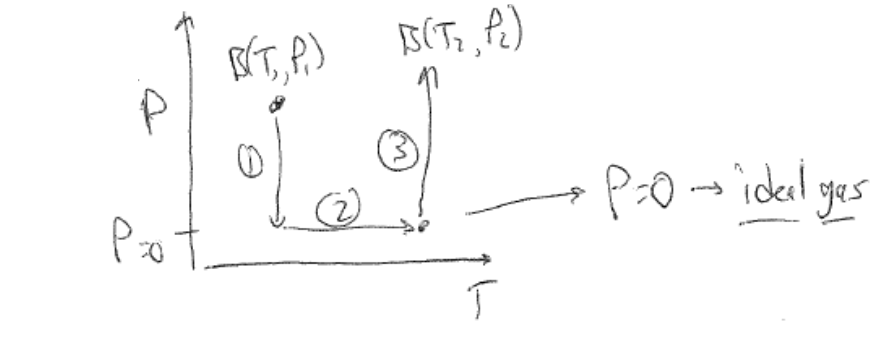
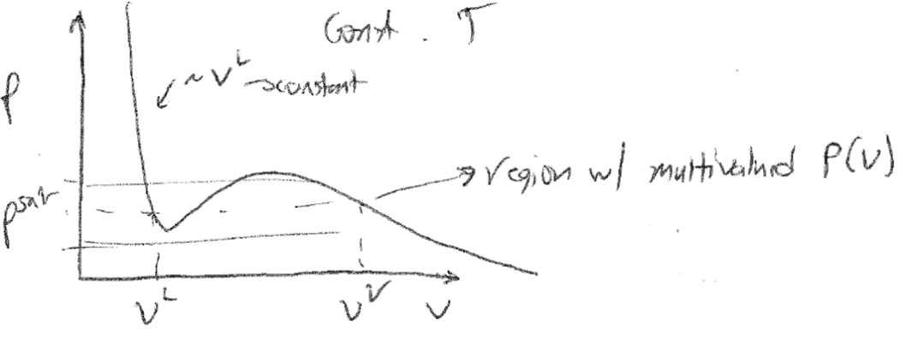
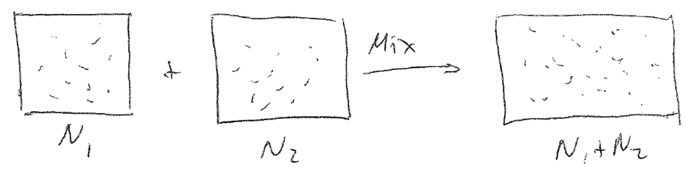

Fugacity#
Recommended textbooks#
Tester and Modell, Ch. 8.5, 9.7, 9.1, 9.2
Topics in this lecture#
Departure functions
Fugacity of a single-component system
Introduction to mixtures
Announcements#
Problem Set 6 due Thursday
Additional expressions for departure functions (possibly needed for Problem Set 6) are included in notes accompanying this / last lecture.
Departure functions#
In the last lecture, we finished our discussion of general \(PVT\) isotherm behavior. Referring back to Lecture 22, the chemical potential of a material in any phase can be fully specified if its \(PVT\) behavior and heat capacity, \(C_P\), are known. Thus, our next task was to discuss calculations of \(C_P\). In general, \(C_P\) is a materials property that could be tabulated for a system, but as it depends on both temperature and pressure it would be difficult to tabulate all relevant values. Instead, a common approach is to only tabulate the behavior of \(C_P\) for the ideal gas state of a material, and then relate this value of \(C_P\) to thermodynamic properties at other temperatures and pressures of interest. To illustrate why ideal gas values of \(C_P\) are sufficient to define properties at other conditions, we first set out to define departure functions by considering the change in a generic property, \(B\), of a real gas between two points in the \(T-P\) plane:
We defined a three-step pathway between these two points, recognizing that \(B\) is a state function so any paths will yield the same value of \(\Delta B\). Our path will first involve the isothermal change of state from \(T_1, P_1\) to an ideal gas reference state at the same temperature (i.e., we let \(P\rightarrow 0\) or equivalently \(V\rightarrow \infty\) to reach the ideal gas state), then the change of the ideal gas reference state to \(T_2\), and finally the change from the ideal gas reference state to the real state at \(T_2, P_2\). Letting \(B\) be the entropy, \(S\), we wrote out this three-step path as:
{width=”86%”}
We can evaluate the temperature derivative given a \(PVT\) equation of state. We can integrate the second term over the temperature range of interest, but the first and third terms give issues. Specifically, a singularity will arise as \(P\rightarrow 0\) - we can see this if we consider for example the ideal gas equation of state, for which \(\left ( \frac{\partial V}{\partial T}\right )_P = \frac{R}{P}\). However, because we know that the system behaves like an ideal gas as \(P\rightarrow 0\), we can add and substract integrals of the ideal gas equation of state such that as \(P\rightarrow 0\) the integrand goes to 0. Specifically, we can write:
With this last expression, we eliminate the singularities in the first and third integrals because as \(P\rightarrow 0\) the ideal gas value of the partial derivative will cancel out with the real gas partial derivative. We now have a closed form method to calculate the change in \(S\) between any two states in the \(P-T\) plane if given an appropriate equation of state and ideal gas heat capacity.
The key to this approach is that we have defined three terms - the first and third represent the difference in the entropy between a real gas at pressure \(P\) and an ideal gas at pressure \(P\), or in other words the departure of the entropy of a real gas from that of an ideal gas at the same temperature and pressure. We generally refer to these terms which capture of departures from ideality as departure functions. For some generic property \(B\) (where \(B\equiv H,G,S,U,\) etc.) we can define the departure function for \(B\) in terms of two equivalent definitions depending on whether we first integrated with respect to pressure or temperature:
Here, \(B(T,P)\) and \(B(T,V)\) are the values of the property at a given temperature as a function of either volume or pressure and \(B^{0}\) is the corresponding property of an ideal gas at the same conditions; the \(0\) superscript indicates the ideal reference state. The choice of a volume-specific or pressure-specific departure function will largely depend on mathematical convenience, depending on if a system’s equation of state (or compressibility factor) is more easily integrated as a function of \(P\) or \(V\). Referencing the same formalism as above, we can then write the three-step path through phase space in terms of the departure function as:
The first and third terms represent the departure functions and the second term represents the variation of the property in an ideal gas state. Following a similar framework as for the entropy above, we could then derive departure functions for various properties. Departure functions are often defined in terms of the compressibility factor, denoted by \(Z\). The compressibility factor measures the deviation of the volume of a real gas/fluid from that of an ideal gas, and is defined as:
\(Z=1\) for an ideal gas, while the value is typically much lower for liquids (approx. 0.01-0.3 depending on the phase state of the fluid). \(Z\) can be determined from an equation of state if given, or from other approximations. Here, we will present several departure functions as a function of pressure, and are written in terms of the compressibility factor as is common:
Using departure functions thus provides a mathematically convenient way to compute property changes between any two points in \(PT\) space while always computing isobaric paths for an ideal gas state for which materials parameters can be readily tabulated. Referring back to our motivation for defining only ideal gas heat capacities, we further see that changes in entropy can be computed for real systems using only ideal gas heat capacities following the departure function approach, which simplifies experimental data collection immensely.
Single-component phase equilibrium: defining fugacity#
We have now described departures from ideality with respect to the \(PVT\) behavior of systems by defining the compressibility factor, \(Z = PV/RT\), and deriving the general form for a departure function. In principle, we now have the framework necessary to compute the chemical potential and thus determine conditions of phase equilibrium. Recall that for a single-component system, phase equilibrium is reached at constant temperature and pressure if the following condition is met:
where \((1)\) and \((2)\) refer to the two phases that coexist in the system. We can relate the chemical potential to the temperature and pressure via the Gibbs-Duhem relation in intensive form:
We now want to calculate values of \(\mu\) at phase equilibrium, and will consider vapor-liquid equilibrium in a single-component system as a representative example. To calculate \(\mu\) in either the liquid or vapor phase, we can integrate the Gibbs-Duhem equation from a reference state to the chemical potential of interest. As in our discussion of departure functions, a common choice of reference state is an ideal gas state at the same temperature, \(T\), as the system at phase equilibrium. This reference state is convenient because we can obtain the value of the chemical potential for any given temperature at constant pressure for an ideal gas if we know the temperature dependence of \(C_P^0\) (with the \(^0\) indicating the ideal gas state as above); this follows from the relationship between the entropy and the heat capacity derived in the last two lectures. To obtain the chemical potential for any given \(T\) and \(P\) we can thus integrate the Gibbs-Duhem equation at constant temperature \(T\) from \(P^{\textrm{ref}}\) to \(P\), yielding:
This integral is straightforward if we know the \(PVT\) behavior of the system either through tabulated compressibility factors or equations of state. Again, note that we only have the \(dP\) term because we are assuming a isothermal path between a reference state at the same temperature. However, there is an issue associated with this calculation when using an ideal gas reference state that may not be obvious. For example, consider the pressure variation of the chemical potential over a range of pressures in which the system acts like an ideal gas, so that we can substitute in the ideal gas equation of state for the molar volume to obtain:
This last expression illustrates the issue - the system will behave like an ideal gas as \(P^\textrm{ref} \rightarrow 0\), but the chemical potential will approach negative infinity in the same limit. This issue, which also appeared in our treatment of departure functions, motivates the definition of a new quantity, the fugacity, which is better behaved.
We define the fugacity in terms of the isothermal departure function of the molar Gibbs free energy (or, equivalently, chemical potential):
Here, \(f\) is the fugacity and is a function of temperature and pressure. \(G^0\) is the molar Gibbs free energy of the ideal gas reference state. The fugacity has units of pressure, and by inspection of this definition we see that \(f=P\) if the system is an ideal gas, \(f>P\) if the system has repulsive interactions between its molecules that would lead to an increase in the chemical potential, and \(f<P\) if the system has attractive interactions that would lead to a decrease in the chemical potential. Because \(f=P\) and therefore \(\mu(T,P) = \mu^0(T,P)\) for an ideal gas, we can also think of the fugacity as the pressure of an ideal gas that has the same chemical potential as the real fluid of interest at the same temperature. Thus, the fugacity effectively captures departures of the pressure from ideality. We can also write the fugacity in differential form as:
Finally, we can also define a related, unitless quantity, the fugacity coefficient, as:
Returning to the condition of phase equilibrium, if two phases (e.g., the liquid and vapor phases of a pure component) are in equilibrium, then the chemical potentials are equal, leading to:
Since the ideal gas reference state is the same for both phases, the reference state chemical potentials ,\(\mu^0(T,P\)), can be subtracted from each phase’s chemical potential and we find that fugacities are equal between two phases at equilibrium. We also establish the equivalence of fugacity coefficients since pressures are equal at equilibrium. Summarizing, the fugacity has the following properties:
For an ideal gas, \(f = P\).
For a gas with repulsive intermolecular interactions, \(f > P\).
For a gas with attractive intermolecular interactions, \(f < P\).
Since the fugacity is monotonically related to the chemical potential, at constant \(T\) and \(P\) the phase with a lower fugacity will be present at equilibrium.
At phase equilibrium, \(f^{(1)} = f^{(2)}\) and \(\phi^{(1)} = \phi^{(2)}\).
Calculating the fugacity#
Next, let’s consider how to calculate the fugacity as a function of the pressure in analogy to what was discussed above for the chemical potential. Our eventual goal is to try to identify a single pressure, the saturation pressure, for which the fugacities of the liquid and vapor phases of a material are equal, which would then satisfy the condition of phase equilibrium. First, we can write from the definition:
The intensive form of the Gibbs-Duhem relation is:
Note that this integral is performed at constant \(T\) and \(N\). We thus obtain a similar expression as was originally developed for the chemical potential in terms of an ideal gas. If our reference state is defined such that the molar volume \(V\) is not a strong function of pressure, then we can directly integrate this expression. For example, if we consider a change in the fugacity of a condensed state (i.e., a liquid), then the molar volume is largely invariant with respect to pressure since most liquids/solids are incompressible. In this case, a reasonable reference pressure is the saturation pressure, \(P^{\textrm{sat}}\), where the vapor fugacity is equal to the liquid fugacity, and we integrate to the pressure of interest at constant volume and temperature:
The exponential term is called the Poynting correction and accounts for the change in the fugacity associated with pressures that are higher than the saturation pressure. Recall that compressibility factors for liquids are often quite small (\(Z\approx 0.01 - 0.3\)) and the term in the exponential is equivalent to the difference in the compressibility factor of the liquid at a pressure \(P\) relative to the saturation pressure. Therefore, the term in the exponential is also typically \(\approx 0\) and the Poynting correction is typically close to 1 unless the pressure is significantly larger than the saturation pressure, allowing the correct to be safely neglected.
{width=”86%”}
The prior framework is useful for computing liquid-phase fugacities, but is not particularly helpful in determining conditions of phase equilibrium because it presupposes that we know the saturation pressure, which is exactly the quantity that we seek to determine. Moreover, we cannot use the Poynting approach for vapor phases because in general the vapor-phase volume will be a strong function of pressure. Instead, we can return to our definition of the fugacity coefficient as equal to the isothermal Gibbs departure function and use this to calculate fugacities directly from tabulated or analytical compressibility factors (or equations of state). First, recall the expression for the isothermal Gibbs departure function:
In principle we can integrate this expression directly. A problem, however, is that \(Z(P)\) is generally a poorly behaved function for real gases at phase coexistence, since many gas equations of state are cubic with respect to volume and thus would be multivalued for a given value of \(P\) corresponding to volumes of different phases. For example, the van der Waals equation of state is:
\(b\) represents excluded molecular volume and \(a\) measures the attraction between molecules. This expression is cubic in \(V\) and when plotted would have pressures that correspond to multiple different volumes as expected for any equation of state that can describe phase equilibrium. This equation of state is the simplest that properly captures two different molecular volumes corresponding to a vapor and liquid phase if plotted at constant temperature; the smaller volume corresponds to the liquid phase (\(V^L\)), while the larger corresponds to the vapor phase (\(V^V\)) in a two-phase region. Thus, \(Z(P)\) is not a well-defined function because it is multivalued for a given value of \(P\), so we can instead use \(Z(V)\) to calculate the fugacity coefficient. From the definition of \(Z\), we can write a total differential for \(Z\) at constant \(T\) as:
Substituting this expression into the fugacity coefficient expression gives:
Note that we have chosen appropriate limits of integration for each integral to reflect an ideal gas reference state - at \(P = 0\), \(Z = 1\) since that is the ideal gas state, and also at \(P = 0\), \(V = \infty\) since volume and pressure are inversely related. Also, recall that all of these integrals are along isothermal paths (i.e., at constant \(T\) and \(N\)). We now have an expression in which the integral is related to volume, which would be appropriate for a compressibility factor given as \(Z(V)\). From knowledge of the compressibility factor, we thus have a means of computing fugacities and determining the conditions of equilibrium - we could choose a pressure, determine the corresponding molar volumes of the liquid and vapor phases associated with the isotherm for that pressure (i.e., roots of the cubic equation of state), calculate the fugacity for each molar volume, and iterate until a pressure is found such that the fugacity corresponding to each volume is identical. This pressure would be the saturation pressure. A similar procedure could be performed using tabulated compressibility factor data by interpolating between known data points as needed.
Introduction to mixtures: partial molar properties#
So far, we have only calculated the fugacity of a single-component system at phase equilibrium. Now, we will extend our framework to consider mixtures. First, let’s consider some simple definitions when dealing with mixtures. We define \(x_i\) as the mole fraction of component \(i\), such that:
Each of the \(N_i\) is given in moles, and \(N\) is the total number of moles in the mixture. Note that by convention \(x_i\) refers to mole fractions in a liquid or solid phase and \(y_i\) refers to mole fractions in a vapor phase. Using \(x_i\) (or \(y_i\)) in place of \(N_i\) allows us to write an intensive form of some potential \(B\); for example, the intensive Gibbs free energy of a multicomponent mixture is then:
We could also write two equivalent expressions for the extensive value of the Gibbs free energy:
We can determine \(x_n\) from the other mole fractions by the constraint above. Now, let us consider what happens to system properties during the process of mixing relative to the properties of the independent pure components of that mixture. In other words, the process we consider is taking separate single-component systems and mixing their constituents into a single-phase mixture with a given composition, as illustrated below:
{width=”86%”}
For example, consider the volume of a two-component mixture relative to the volume of the two initially separate pure phases. Intuitively, we might guess that the molar volume of a mixture would be the weighted average of the molar volumes of the two components. However, in general this will not hold for a real mixture, or in other words:
The difference in volume will emerge from the interactions between the two components, which will likely differ in their attraction or repulsion from interactions of a given component with other molecules of the same type. To account for interactions between components, we can instead define the increment in the value of some parameter \(B\) for the entire system upon addition of a single component, \(i\), which we refer to as a partial molar property of component i:
Here, the overline indicates a partial molar property of component \(i\) and the partial derivative indicates the change in the (extensive) value of \(\underline{B}\) for the mixture upon increment of component \(i\), with the amount of each other component \(j\) held fixed. By definition, partial molar properties are defined with the temperature and pressure also held constant, as these are the two independent variables commonly associated with phase behavior. Note that all partial molar properties are intensive since derivative is performed with respect to the number of moles of a single component.